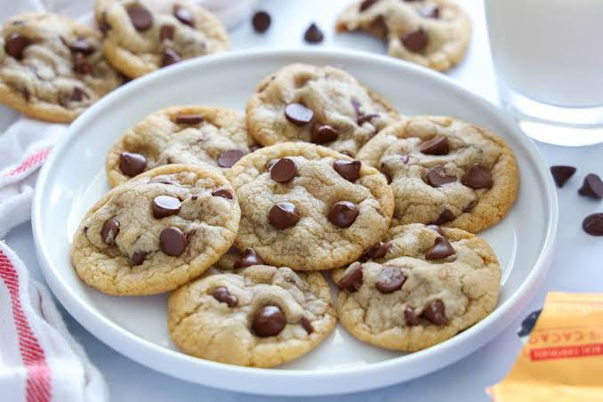

Chocolate Chip Cookies
Chocolate chip cookies are a sweet dessert with a soft center
and chocolate pieces. Follow this recipe to make your own batch.

Ingredients
Instructions
-
Preheat your oven to 350°F (175°C).
Let the butter soften before mixing.
-
Mix the butter and brown sugar in a bowl
until smooth. Add the egg and vanilla extract.
-
Slowly add the flour and stir until a dough forms.
Fold in the chocolate chips.
-
Place spoonfuls of dough on a baking sheet,
leaving space between each cookie.
-
Bake for 10 to 12 minutes, until the edges
are lightly golden.
-
Let the cookies cool before serving.
Enjoy your homemade chocolate chip cookies!